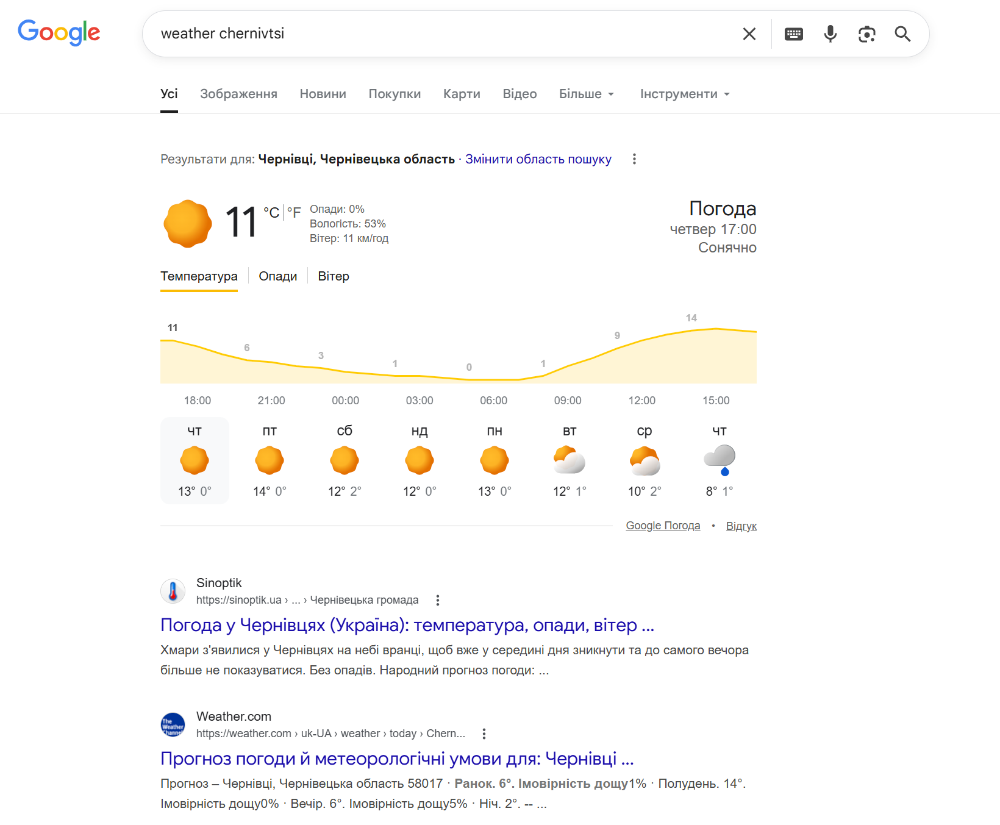
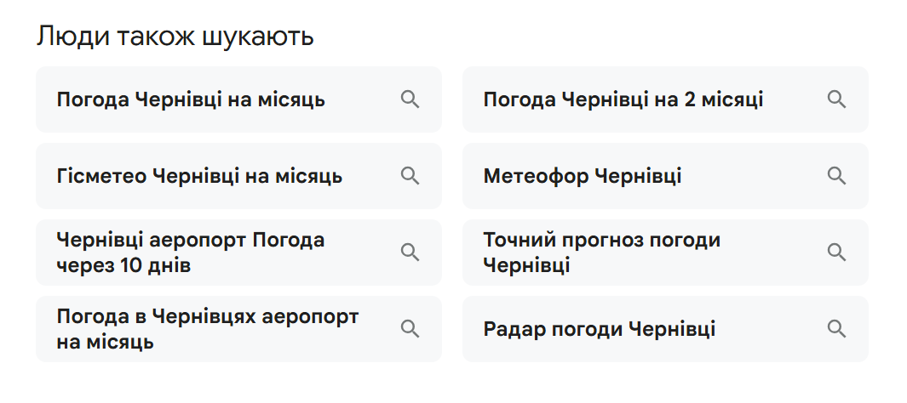

Search Intent (User Intent) - намір, з яким користувач вводить запит у пошукову систему.
Google's Mission: "Організувати світову інформацію та зробити її загальнодоступною та корисною"
RankBrain (2015) + BERT (2019) + MUM (2021): Google розуміє НЕ слова, а НАМІР користувача
SERP характеристики - це особливості або елементи сторінки результатів пошуку в пошукових системах.
Коли користувач вводить запит у пошукову систему, наприклад у Google Search, система показує не лише звичайні посилання на сайти, а й різні додаткові блоки. Саме ці блоки і називають SERP features (SERP-характеристики).
Найпоширеніші елементи SERP характеристик:

Намір - дізнатися інформацію, навчитися, зрозуміти
Приклади запитів:Намір - знайти конкретний сайт або сторінку
Приклади запитів:Намір - вибір перед покупкою, порівняння варіантів
Приклади запитів:Намір - здійснити дію (купити, завантажити, замовити)
Приклади запитів:Проблема - багато запитів мають кілька Search Intent одночасно
Пошук - iPhone 17 Pro
Семантичне ядро (Semantic Core) - упорядкований список всіх ключових слів, за якими планується просування сайту в пошукових системах.
Правило Парето (80/20) в SEO:
Крок 1: Seed Keywords (базові запити)
Для e-commerce tech store:Існує інструмент Google Keyword Planner у системі Google Ads для пошуку та аналізу ключових слів для SEO або реклами.
Дозволяє отримати seed keywords
ОДНА сторінка: /noutbuky-dlia-studentiv
Очікуваний результат:Silo Architecture - організація контенту в ізольовані тематичні блоки для максимальної релевантності.
Рекомендація для більшості проєктів - hybrid підхід дає найкращий баланс структури та гнучкості.